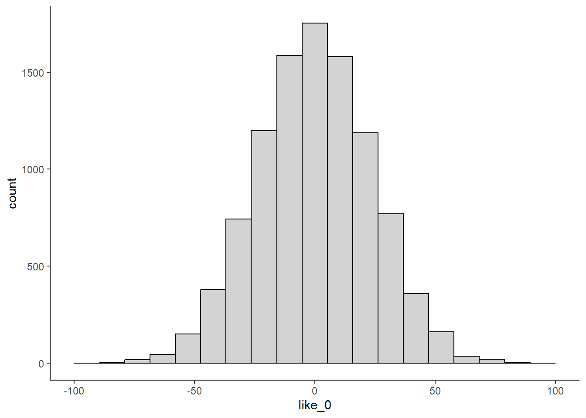
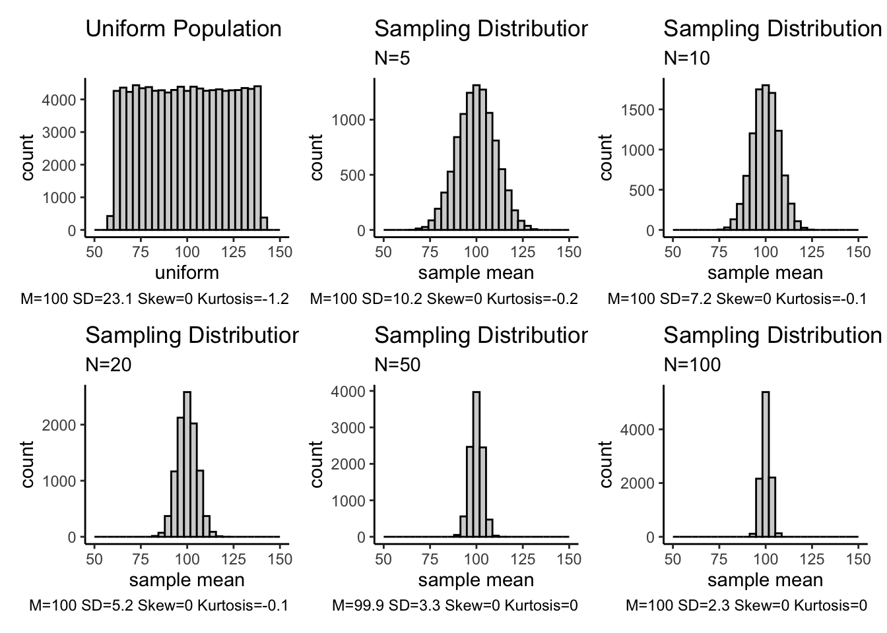
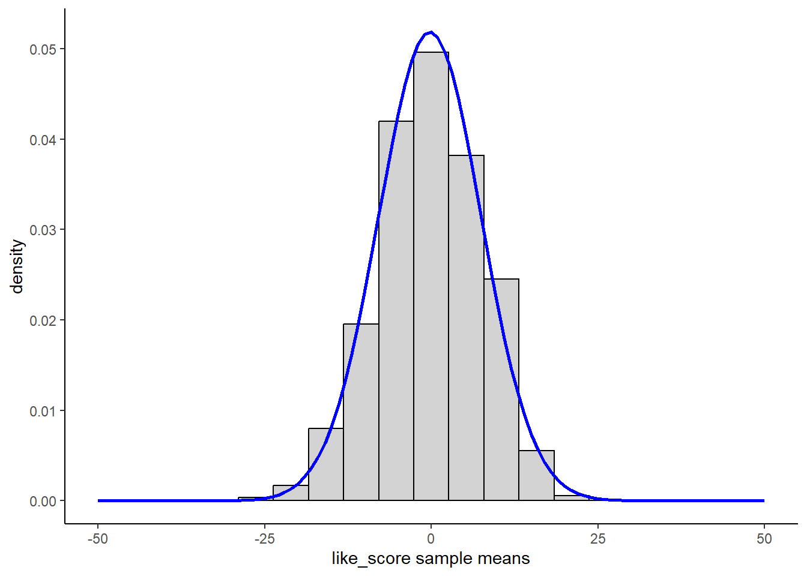
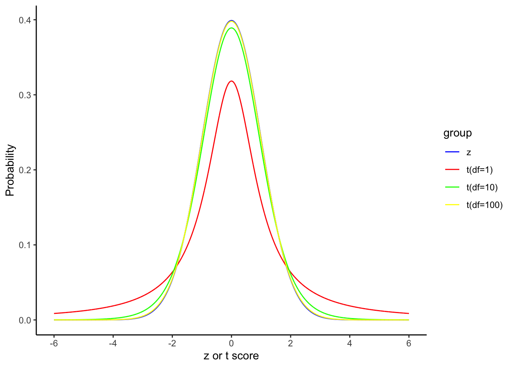

2Sampling Distributions, Parameters, and Parameter Estimates
2.1 Inferential Statistics
Inferential statistics are used to estimate parameters in the population from parameter estimates in a sample drawn from that population.
In inferential statistics, we use these parameter estimates to test hypotheses (predictions; null and alternative hypotheses) about the size of the population parameter.
These predictions about the size of population parameters typically map directly onto research questions about (causal) relationships between variables (IVs and DV).
Answers from inferential statistics are probabilistic. In other words, all answers have the potential to be wrong and you will provide an index of that probability along with your results.
2.2 Populations
A population is any clearly defined set of objects or events (people, occurrences, animals, etc.). Populations usually represent all events in a particular class (e.g., all college students, all alcoholics, all depressed people, all people). It is often an abstract concept because in many/most instances you will never have access to the entire population.
For example, many of our studies may have the population of all people as its target.
Nonetheless, researchers usually want to describe or draw conclusions about populations (e.g., We don’t care if some new drug is an effective treatment for 100 people in your sample. Will it work, on average, for everyone we might treat?).
2.3 (Population) Parameters
A parameter is a value used to describe a certain characteristic of a population. It is usually unknown and therefore has to be estimated.
For example, the population mean is a parameter that is often used to indicate the average/typical value of a variable in the population.
Within a population, a parameter is a fixed value which does not vary within the population at the time of measurement (e.g., the mean height of people in the US at the present moment).
You typically can’t calculate these parameters directly because you don’t have access to the entire population.
We use Greek letters to represent population parameters (\(\mu\), \(\sigma\), \(\sigma^2\), \(\beta_0\), \(\beta_j\)).
2.4 Samples & Parameter Estimates
A sample is a finite group of units (e.g., participants) selected from the population of interest.
A sample is generally selected for a study because the population is too large to study in its entirety. We typically have only one sample in a study.
We use the sample to estimate and test parameters in the population.
These estimates are called parameter estimates.
We use Roman letters to represent sample parameter estimates (\(\overline{X}\), \(s\), \(s^2\), \(b_0\), \(b_j\)).
2.5 Sampling Error
Since a sample does not include all members of the population, parameter estimates generally differ from parameters on the entire population (e.g., use mean height of a sample of 1000 people to estimate mean height of US population).
The difference between the (sample) parameter estimate and the (population) parameter is sampling error.
You will not be able to calculate the sampling error of your parameter estimate directly because you don’t know the value of the population parameter. However, you can estimate it by probabilistic modeling of the hypothetical sampling distibution for that parameter.
2.6 Hypothetical Sampling Distribution
A sampling distribution is a probability distribution for a parameter estimate drawn from all possible samples of size \(N\) taken from a population.
A sampling distribution can be formed for any population parameter.
Each time you draw a sample of size \(N\) from a population you can calculate an estimate of that population parameter from that sample.
Because of sampling error, these parameter estimates will not exactly equal the population parameter. They will not equal each other either. They will form a distribution.
A sampling distribution, like a population, is an abstract concept that represents the outcome of repeated (infinite) sampling. You will typically only have one sample.
2.7 What if we didn’t need samples?
Research question: How do inhabitants of a remote pacific island feel about the ocean? Population size = 10,000.
Dependent measure: Ocean liking scale scores that range from -100 (strongly dislike) to 100 (strongly like). 0 represents neutral.
Hypotheses:\(H_0: \mu = 0; H_a: \mu \neq 0\)
2.7.1Question: How would you answer this question if you had unlimited resources (e.g., time, money, and patience)?
Administer the Ocean liking scale to all 10,000 inhabitants in the population and calculate the population mean score. Is it 0? If not, the inhabitants are not neutral on average.
This path points to where your data is and should be a relative path from your R project.
2
we use the here() function in the here package (here::here()) to define paths within a function. This approach (vs. file.path()) works well when using R Projects.
See also: view() allows you to open up the data frame in rstudio.
glimpse() is a useful function that you can pipe tibbles into when first reading them in. It shows you useful information, like number of rows and column, variable (column) names, a sample of what the data look like, and the class of each variable (e.g., double, character, factor).
skim() and other functions in the skimr package are helpful for quick summaries of your data (e.g., missingness, distribution, type of data)
data |> skimr::skim()
Data summary
Name
data
Number of rows
10000
Number of columns
2
_______________________
Column type frequency:
numeric
2
________________________
Group variables
None
Variable type: numeric
skim_variable
n_missing
complete_rate
mean
sd
p0
p25
p50
p75
p100
hist
subid
0
1
5000.5
2886.90
1.00
2500.75
5000.5
7500.25
10000.00
▇▇▇▇▇
like_score
0
1
0.0
23.67
-86.64
-16.08
0.1
16.14
84.46
▁▃▇▃▁
If we want less information about the distribution we can use summarise and specify the descriptive statistics we want.
data |>summarise(n =n(),mean =mean(like_score),sd =sd(like_score))
# A tibble: 1 × 3
n mean sd
<int> <dbl> <dbl>
1 10000 -6.27e-16 23.7
You can also pull out a few rows to look at your data. This can be done using slice_head() to pull out \(n\) top rows of the data set, slice_tail() to pull out \(n\) bottom rows of the data set, or slice_sample() to pull out a random \(n\) of rows from the data set.
data |>slice_head(n =5) data |>slice_tail(n =5) 1set.seed(101)data |>slice_sample(n =5)
1
Whenever you are using random numbers it is important to set a seed first (set.seed()). This ensures you can reproduce that randomness!
plot_raw <- data |>ggplot(aes(x = like_score)) +geom_histogram(color ="black", fill ="light grey", bins =20) +scale_x_continuous(limits =c(-100, 100)) +1theme_classic()
1
We can use themes to customize the output of our figures. This can be piped into your ggplot() code or set globally at the top of your script using the code below:
theme_set(theme_classic())
plot_raw

2.9 Parameter Estimation and Testing
2.9.1Question: What do you conclude?
Inhabitants of the island are neutral on average on the Ocean Liking Scale; \(\mu\) = 0.
2.9.2Question: How confident are you about this conclusion?
Excluding issues of measurement of the scale (i.e., reliability), you are 100% confident that the population mean score on this scale is 0 (\(\mu\) = 0).
2.9.3Question: Of course, this approach to answering a research question is not typical. Why? And how would you normally answer this question?
You will very rarely have access to all scores in the population. Instead, you have to use inferential statistics to “infer” (estimate) the size of the population parameter from a sample.
2.10 Obtain a Sample
You are a poor graduate student. All you can afford is \(N = 10\).
set.seed(2005) data_sample_1 <- data |>slice_sample(n =10)data_sample_1 |>summarise(n =n(),mean =mean(like_score),sd =sd(like_score))
# A tibble: 1 × 3
n mean sd
<int> <dbl> <dbl>
1 10 2.14 19.4
2.10.1Question: What do you conclude and why?
A sample mean of 2.14 is not 0. However, you know that the sample mean will not match the population mean exactly. How likely is it to get a sample mean of 2.14 if the population mean is 0 (think about it!)?
Your friend is a poor graduate student too. All she can afford is \(N = 10\) too.
data_sample_2 <- data |>slice_sample(n =10)data_sample_2 |>summarise(n =n(),mean =mean(like_score),sd =sd(like_score))
# A tibble: 1 × 3
n mean sd
<int> <dbl> <dbl>
1 10 1.74 23.0
2.10.2Question: What does she conclude and why?
A sample mean of 1.74 is not 0. However, she knows that the sample mean will not match the population mean exactly. It is more likely to get a sample mean of 1.74 than 2.14 if the population mean is 0 but she still doesn’t know how likely either outcome is. What if she obtained a sample with mean of 30?
2.11 Sampling Distribution of the Mean
You can construct a sampling distribution for any parameter estimate (e.g., mean, \(s\), min, max, \(r\), \(b_0\), \(b_1\)).
For the mean, you can think of the sampling distribution conceptually as follows:
Imagine drawing many samples (lets say 1000 samples but in theory, the sampling distribution is infinite) of \(N\)=10 participants (10 participants in each sample) from your population.
Next, calculate the mean for each of these samples of 10 participants.
Finally, create a histogram (or density plot) of these sample means.
Here we are writing a function that we will use to generate descriptive statistics over 1000 samples. We are keeping this function generic because we are going to use this function again later in the chapter for more simulation examples!
Question: What will the mean of the sample means be? In other words, what is the mean of the sampling distribution?
The mean of the sample means (i.e., the mean of the sampling distribution) will equal the population mean of raw scores on the dependent measure. This is important because it indicates that the sample mean is an unbiased estimator of the population mean.
The mean is an unbiased estimator: The mean of the sample means will equal the mean of the population. Therefore, individual sample means will neither systematically under or overestimate the population mean.
Raw Ocean Liking Scores:
# A tibble: 1 × 3
n mean_m sd
<int> <dbl> <dbl>
1 10000 0 23.7
Sample (N=10) Means:
# A tibble: 1 × 3
n mean_m sd
<int> <dbl> <dbl>
1 1000 -0.24 7.69
The sample variance (\(s^2\); with n-1 denominator) is also an unbiased estimator of the population variance (\(\sigma^2\)). In other words, the mean of the sample \(s^2\)’s will approximate the population variance. Sample \(s\) is negatively biased.
Question: Will all of the sample means be the same?
No, there was a distribution of means that varied from each other. The mean of the sampling distribution was the population mean but the standard deviation was not zero.
# A tibble: 1 × 3
n mean_m sd
<int> <dbl> <dbl>
1 1000 -0.24 7.69
2.14 Standard Error(SE)
The standard deviation of the sampling distribution (i.e., standard deviation of the infinite sample means) is equal to:
\(\frac{\sigma}{\sqrt{N_{sample}}}\)
Where \(\sigma\) is the standard deviation of the population raw scores.
This variability in the sampling distribution is due to sampling error.
Therefore, because we use parameter estimates calculated in our sample to estimate population parameters, we would like to minimize sampling error.
The standard deviation of the sampling distribution for a parameter estimate has a technical name. It is called the standard error of the parameter estimate. Here, we are talking about the standard error of the mean.
Question: What factors affect the size of the sampling error of the mean (i.e., the standard error)?
The standard deviation of the population raw scores and the sample size.
Question: Variation among raw scores for a variable in the population is broadly caused by two factors. What are they?
Individual differences
Measurement error (the opposite of reliability)
Question: What is the relationship between population variability (\(\sigma\)) and SE?
As the variability of the variable increases in the population, the SE increases.
Question: What would happen to SE if there was no variation in population scores?
The SE would equal 0 no matter which participants you sampled. They would all have the same scores!
Question: What is the relationship between sample size and SE?
As the sample size increases, the SE for the statistic will decrease.
Question: What would the SE be if the sample size equalled population size?
If the sample contained all participants from the population, the SE would be equal to 0 because each sample mean would have exactly the same value as the overall population mean (because all same scores).
Question: What would happen if the samples contained only 1 participant?
If each sample contained only 1 participant, the SE would be equal to the variation (\(\sigma\)) observed within the population.
2.15 Shape of the Sampling Distribution
Central Limit Theorem: The shape of the sampling distribution approaches normal as \(N\) increases.
The shape is roughly normal even for moderate sample sizes assuming that the original distribution isn’t really weird (i.e., non-normal).
2.16 An Important Normal Distribution: Z-scores
The \(z\) distribution contains normally distributed scores with a mean of 0 and a standard deviation of 1.
You can therefore think of any specific z-score as telling you the position of the score in terms of standard deviations above the mean.
The probability distribution is known for the \(z\) distribution.

2.17 Probability of Parameter Estimate Given \(H_0\)
How could you use the \(z\) distribution to determine the probability of obtaining a sample mean (parameter estimate) of 2.40 if you draw a sample of \(N=10\) from a population of Ocean Liking scores with a population mean (parameter) of 0?
Think about it……
2.18 Hypothetical Sampling Distribution for \(H_0\)
If \(H_0\) is true; the sampling distribution has a mean of 0 and standard deviation of \(\frac{\sigma}{\sqrt{N_{sample}}} = \frac{23.7}{\sqrt{10}} = 7.5\).

2.18.1Question: If \(H_0\) is true and this is the sampling distribution (in blue), how likely is it to get a sample mean of 2.4 or more extreme?
Q + A
Show Answer
Pretty likely…But we can do better than that!
2.19 Our First Inferential Test: The z-test
\(z = \frac{2.4 - 0}{7.5} = 0.32; p \le .749\)
pnorm(0.32, mean=0, sd=1, lower.tail=FALSE) *2
[1] 0.7489683
2.20\(t\) vs. \(z\)
\(z = \frac{2.4 - 0}{7.5} = 0.32\)
Question: Where did we get the 2.4 from in our z-test?
Our sample mean from our study. This is our parameter estimate of the population mean of OLS (like_score) scores.
Question: Where did we get the 7.5 from in our z-test and what is the problem with this?
This was our estimate of the standard deviation of the sampling distribution. \(\frac{\sigma}{\sqrt{N_{sample}}}\) We do not know \(\sigma\).
Question: How can we estimate \(\sigma\)?
We can use our sample standard deviation (\(s\)), but \(s\) is a negatively biased parameter estimate. On average, it will underestimate \(\sigma\).
Question: So what do we do?
We account for this underestimation of \(\sigma\) and therefore of the standard deviation (standard error) of the sampling distribution by using the t distribution rather than the \(z\) distribution to calculate the probability of our parameter estimate if \(H_0\) is true.The t distribution is slightly wider, particularly for small sample sizes to correct for our underestimate of the standard deviation.
2.21 Our Second Inferential Test: One Sample t-test
Where \(SE\) is estimated using \(s\) from sample data. \(df = N – P = 10 - 1 = 9\)
The bias in \(s\) decreases with increasing \(N\). Therefore, \(t\) approaches \(z\) with larger sample sizes.

2.22 Null Hypothesis Significance Testing (NHST)
Divide reality regarding the size of the population parameter into two non-overlapping possibilities: Null hypothesis (\(H_0\)) & Alternate hypothesis (\(H_a\)).
Assume that \(H_0\) is true.
Collect data.
Calculate the probability (\(p\)-value) of obtaining your parameter estimate (or a more extreme estimate) given your assumption (i.e., \(H_0\) is true)
Compare probability to some cut-off value (alpha level).
If this parameter estimate is less probable than cut-off value, reject \(H_0\) in favor of \(H_a\).
If data is not less probable, fail to reject \(H_0\).